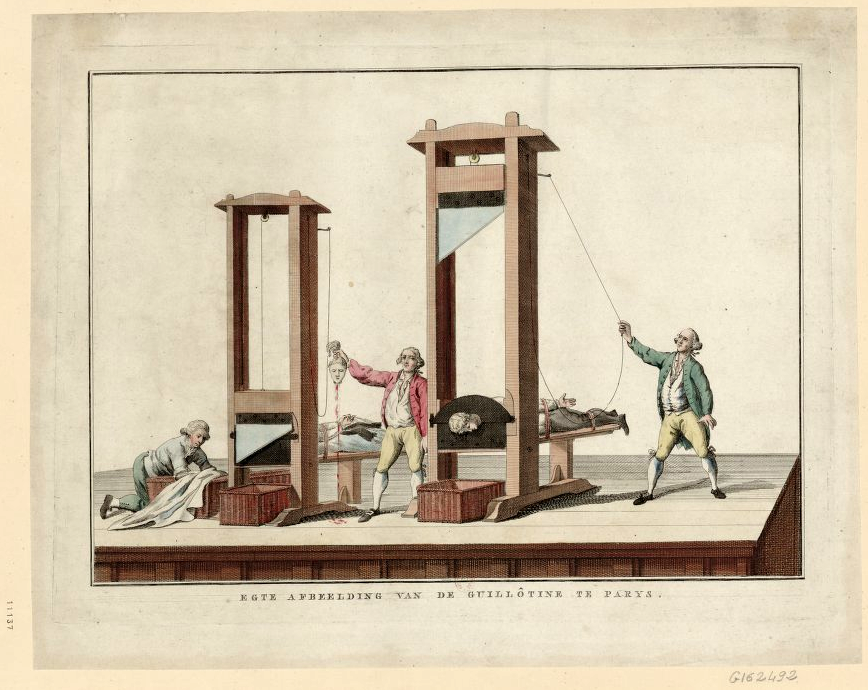
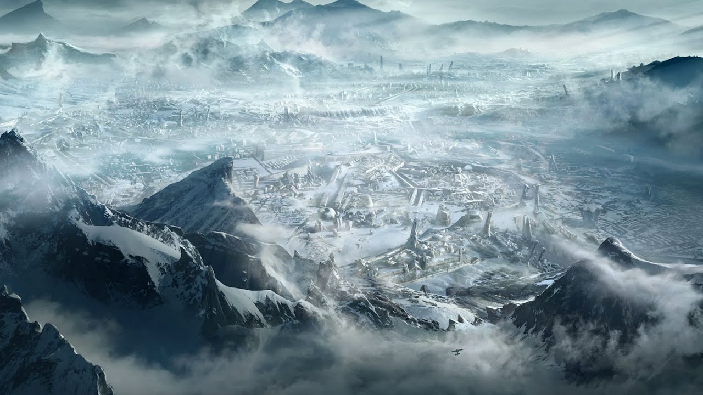

SITE ABOUT
“I have never let my schoolwork interfere with my education.”
Mark Twain
Karl Marx's Das Kapital
In this book Marx wrote about such problems as
1. Subsequently, political economy (the just distribution of wealth) and "political arithmetic" (about taxes) were reorganized into three discrete fields of human activity, namely economics, law and ethics—politics and economics were divorced.
2. he use of money (cash nexus) voided religious and political illusions about its economic value and replaced them with commodity fetishism, the belief that an object (commodity) has inherent economic value.
3. "Poverty in the midst of plenty" consequent to over-production and under-consumption.
Niccolo Machiavelli's The Prince
Machiavelli's ideas on how to accrue honour and power as a leader had a profound impact on political leaders throughout the modern west, helped by the new technology of the printing press.
Authors criticized Machiavelli, but also followed him in many ways. They accepted the need for a prince to be concerned with reputation, and even a need for cunning and deceit, but compared to Machiavelli, and like later modernist writers, they emphasized economic progress much more than the riskier ventures of war.
Mattew Stokoe's Cows
Brush the nastiest book I've ever read. Whomever came up with the expression “Sticks and Stones may break my bones, but words will never hurt me” should just ought rethink that statement after reading this book which smashes all boundaries of good taste, and just may make you become a vegetarian.
This book is very brutal, gory, immoral, disturbing, disgusting, in short eviscerating. Talking cows, blood and guts, bestiality, coprophilia, all handled with a complete lack of imagination.
If you wanna read it... so... good luck.
Wu Chengen's Journey to the West
I can talk o lot about this book, because I love it too much.
It is regarded as one of the Four Great Classical Novels of Chinese literature, and has been described as arguably the most popular literary work in East Asia.
Sunwuknog is the name given to this character by his teacher, Subhuti, the latter part of which means "Awakened to Emptiness" (in the Waley translation, Aware-of-Vacuity); he is often called the Monkey King. He is born on Flower Fruit Mountain from a stone egg that forms from an ancient rock created by the coupling of Heaven and Earth.
He eventually found the "Grand Master of Bodhi," who taught him the 72 heavenly methods of transformation and a "sumersault cloud" which allows him to travel 108,000 li almost instantaneously. After angering several gods and coming to the attention of the Jade Emperor, he is given a minor position in heaven as the Keeper of Horses so they can keep an eye on him.
His primary weapon is his staff, the "Ruyi Jingu Bang," which he can shrink down to the size of a needle and keep in his ear, as well as expand it to gigantic proportions. The rod, which weighs 17,550 pounds, was originally a pillar supporting the undersea palace of the Dragon King of the East Sea, but he was able to pull it out of its support and can swing it with ease. The Dragon King had told Sun Wukong he could have the staff if he could lift it, but was angry when the monkey was actually able to pull it out and accused him of being a thief; hence Sun Wukong was insulted, so he demanded a suit of armour and refused to leave until he received one. The Dragon King, fearful of Sun wreaking havoc in his palace, gave him a suit of golden armour.
The monk Tang Sanzang(P.S it is author,lol) is a Buddhist monk who had renounced his family to become a monk from childhood. He is just called Tripitaka in many English versions of the story. He set off for Dahlia kingdom to retrieve original Buddhist scriptures for China. Although he is helpless in defending himself, the bodhisattva Avalokiteśvara (Guanyin) helps by finding him powerful disciples who aid and protect him on his journey. In return, the disciples will receive enlightenment and forgiveness for their sins once the journey is done. Along the way, they help the local inhabitants by defeating various monsters and demons who try to obtain immortality by consuming Tang Sanzang's flesh.
In my opinion it is really amazing story and really worth to read.
Victor Hugo's Quatrevingt-treize
Ninety-Three (Quatrevingt-treize) is the last novel by the French writer Victor Hugo. Published in 1874, three years after the bloody upheaval of the Paris Commune of the French Revolution, the novel concerns the Revolt in the Vendée and Chouannerie – the counter-revolutionary revolts in 1793 during the French Revolution. It is divided into three parts, but not chronologically; each part tells a different story, offering a different view of historical general events. The action mainly takes place in Brittany and in Paris.
Interesting plot and characters. It interested me about Gauvain's ideas, so I read it.
Mark Menson's The Subtle Art of Not Giving a F*ck: A Counterintuitive Approach to Living a Good Life
The Subtle Art of Not Giving a Fuck is a book about finding meaning in important things in life and only having those values that an individual can control.
This book changed my opinion and thoughts about my life. Strongly recommended by me
Howard Phillips Lovecraft's At the Mountains of Madness
This book is fucking crazy and also changed my mind.
By the 1920s, Antarctica was "one of the last unexplored regions of the Earth in which large stretches of territory had never seen the tread of human feet. Contemporary maps of the continent show a number of provocative blanks, and Lovecraft could exercise his imagination in filling them in... with little fear of immediate contradiction."
A small advance group, led by Professor Lake, discovers the remains of fourteen prehistoric life-forms previously unknown to science, and also unidentifiable as either plants or animals. Six of the specimens have been badly damaged, while another eight have been preserved in pristine condition. The specimens' stratum places them far too early on the geologic time scale for the features of the specimens to have evolved. Some fossils of Cambrian age show signs of the use of tools to carve a specimen for food.
Dyer and Danforth eventually realize that the Elder Things missing from the advance party's camp had somehow returned to life and, after slaughtering the explorers, have returned to their city.
This led me to the idea that the ocean has not yet been fully explored, and we still do not know what this knowledge will give us.
Daron Acemoglu and James Alan Robinson's Why Nations Fail: The Origins of Power, Prosperity, and Poverty
The central idea of many of the authors' works is the defining role of institutions in the achievement of a high level of welfare by countries.
Beginning with a description of Nogales, Arizona, and Nogales, Sonora, the authors question the reasons for the dramatic difference in living standards on either side of the wall separating the two cities. The book focuses on how some countries have managed to achieve high levels of prosperity, while others have consistently failed. Countries that have managed to achieve a high level of well-being have demonstrated stable high rates of economic growth for a long time: this state of the economy is called sustainable development.
The decisive role for the development of countries, according to the authors, is played by institutions — a set of formal and informal rules and mechanisms for coercing individuals to comply with these rules that exist in society. Acemoglu and Robinson divide institutions into two large groups: political and economic. The first regulate the distribution of powers between the various authorities in the country and the procedure for the formation of these bodies, and the second regulate the property relations of citizens. The concept of Acemoglu and Robinson consists in opposing two archetypes: the so-called. “extractive” (“extracting”, “squeezing”) and “inclusive” (“including”, “uniting”) economic and political institutions, which in both cases reinforce and support each other.